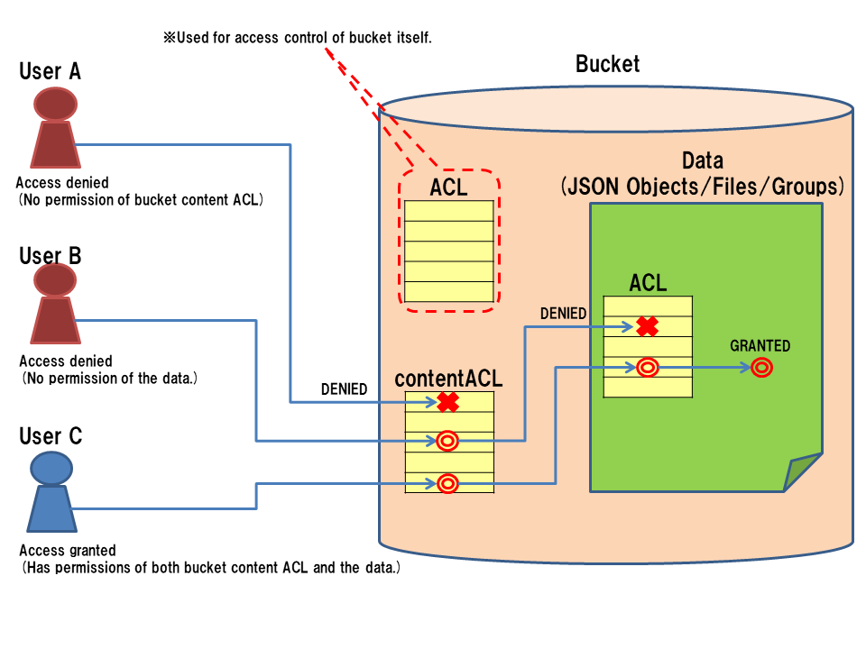

2.6. セキュリティ : ACL¶
2.6.1. ACL の概要¶
BaaS では、アクセス制御に ACL (Access Control List) を使用します。
ACL は、グループ、オブジェクトストレージ(バケット、オブジェクト)、 ファイルストレージ(バケット、ファイル)などに付与し、 アクセス制限を行うことができます。
ACLには、対象データのオーナ、読み書き可能なユーザ・グループ、 管理ユーザ・グループのリストなどを記述します。
2.6.2. ACL の表記方法¶
ACL の表記は、各サービス毎に共通のため、ここで表記方法について説明します。
ACL は JSON 形式で表記し、対象の JSON 内に埋め込みます。 オブジェクトストレージのオブジェクトデータに埋め込む場合は、 以下のように "ACL" プロパティに埋め込む形になります。
{
"_id": "xxxxxxx",
"itemName": "Computer 12345",
"price": 120000,
"date": "2014-03-04",
"ACL": {
"owner": "514af36644f9cb2eb8000002",
"r" : [ "g:authenticated" ],
"w" : [ "514af36644f9cb2eb8000002", "514af36644f9cb2eb8000003" ],
"c" : [],
"u" : [],
"d" : [],
"admin" : [ "514af36644f9cb2eb8000002" ],
}
}
ACL の各プロパティは以下の意味を持ちます。
- owner : オブジェクトのオーナとなるユーザIDです。オーナはオブジェクトに対するすべての権限を持ちます。
- r : オブジェクトを読み込み可能なユーザ・グループ一覧です。
- w : オブジェクトを書き込み可能なユーザ・グループ一覧。以下 "c", "u", "d" 権限を包含します。
- c : オブジェクトを作成可能なユーザ・グループ一覧。（後述する contentACL でのみ有効)
- u : オブジェクトを更新可能なユーザ・グループ一覧。
- d : オブジェクトを削除可能なユーザ・グループ一覧。
- admin : オブジェクトの ACL を変更可能なユーザ・グループ一覧。
グループを指定する場合は、グループ名の前に "g:" プレフィクスを指定します。
また、以下の特殊グループ名を使用できます。
- anonymous : 未ログインユーザを含む全ユーザを含むグループです。
- authenticated : ログイン済みの全ユーザを含むグループです。
2.6.3. contentACL¶
ACL 付与対象がバケットの場合は、バケットそのものに対する ACL と、 バケットの中身に対する contentACL の２つを指定することができます。
以下、バケット情報の例を示します。 以下のように "ACL" および "contentACL" プロパティの2箇所に埋め込む形になります。 なお、contentACL には owner および admin フィールドはありません。
{
"name": "BucketName",
"ACL": {
"owner": "514af36644f9cb2eb8000002",
"r" : [ "g:authenticated" ],
"admin" : [ "514af36644f9cb2eb8000002" ],
},
"contentACL": {
"r" : [ "g:authenticated" ],
"w" : [ "514af36644f9cb2eb8000002", "514af36644f9cb2eb8000003" ],
}
}
2.6.4. データの ACL とバケットの contentACL の関係¶
データにアクセスを行う際、データ自体の ACL と、データを格納するバケットの contentACL の両方がチェックされます。
そして、両方の権限チェックを通過 して初めて、データへのアクセスが許可されます。 したがって、いくらデータの ACL でアクセスが許可されていても、バケット contentACL で許可されていなければ、 アクセスは拒否されます。逆にバケット contentACL でアクセスが許可されていても、データの ACL で許可されていなければ やはりアクセスは拒否されます。
{kind=link}
2.6.5. ACLレスバケット¶
オブジェクトストレージについては、バケット単位でオブジェクト単位の ACL 制御を無効化することができます。 無効化したバケットを「ACLレスバケット」と呼びます。
ACLレスバケットの作成は REST API またはデベロッパーコンソールから行うことができます。
ACLレスバケットは、通常のバケットに比べて以下のような違いがあります。
- 格納されるオブジェクトに ACL は付与されません。このため大量のデータを格納するバケットでは、データ量を削減することができます。
- オブジェクト単位のアクセス制御を行うことはできません。アクセス制御はバケットの contentACL でのみ行うことができます。
- 検索時に ACL の条件が追加されないため、通常のバケットより検索が高速化される可能性があります。
- ACLに関連するインデックスが設定されないため、追加・更新操作が通常より若干高速化される可能性があります。
注意
ACLレスバケット機能はβ版提供となります。
2.6.6. 特殊バケット¶
通常のオブジェクトバケット、ファイルバケットの他に、以下３種類の特殊バケットが存在しています。
- _ROOT : ルートバケット。オブジェクトバケットやファイルバケットの作成権限を制御します。
- _USERS : ユーザバケット。ユーザの読み込み、追加、変更、削除権限を制御します。
- _GROUPS : グループバケット。グループの読み込み、追加、変更、削除権限を制御します。
これらの特殊バケットの権限は、デベロッパコンソール上で確認と変更を行うことができます。